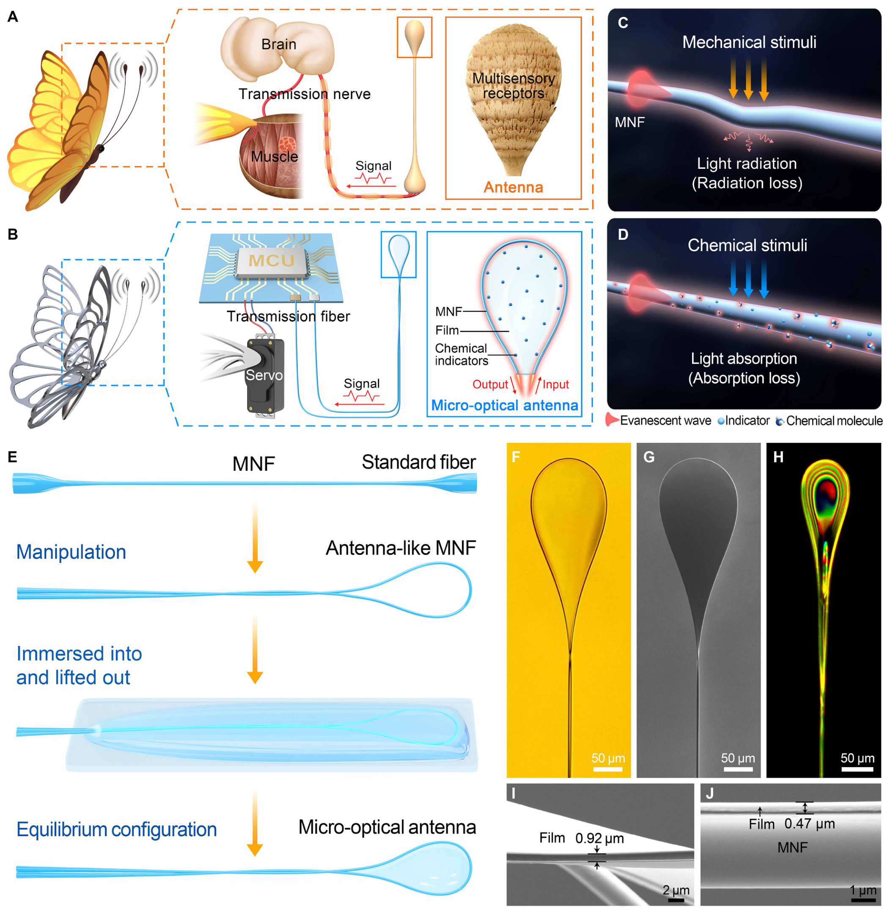
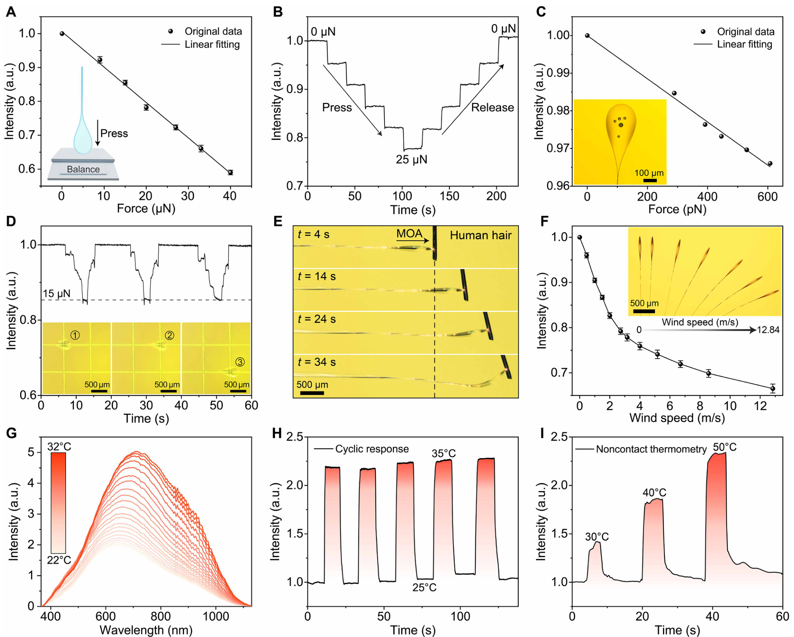
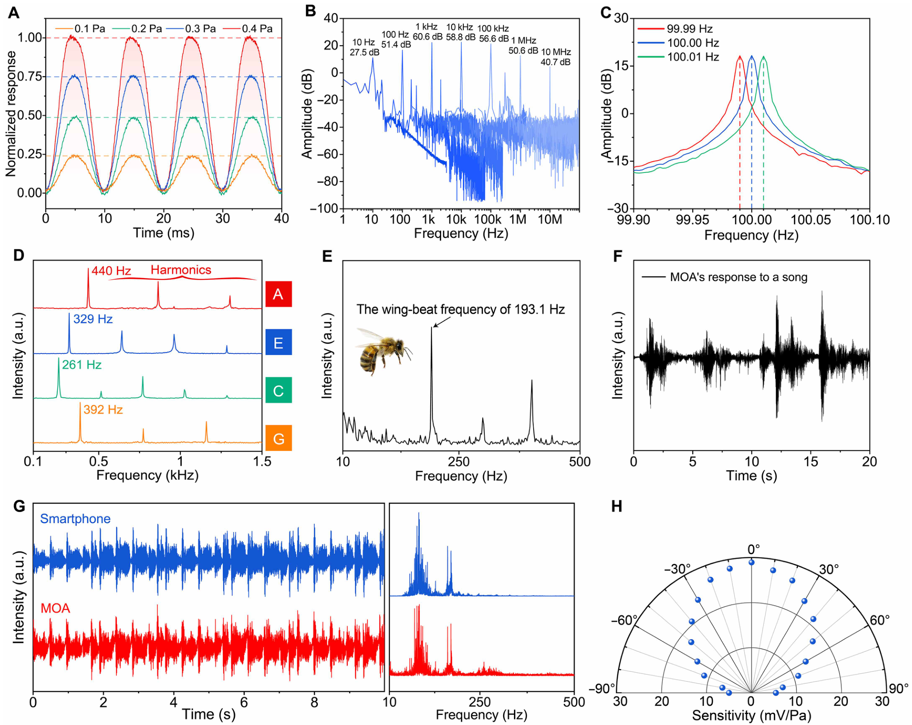
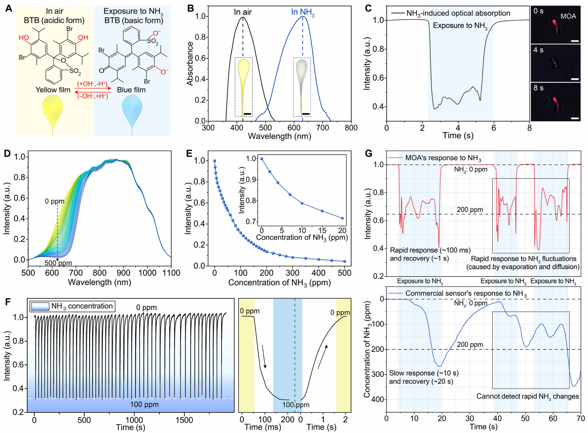
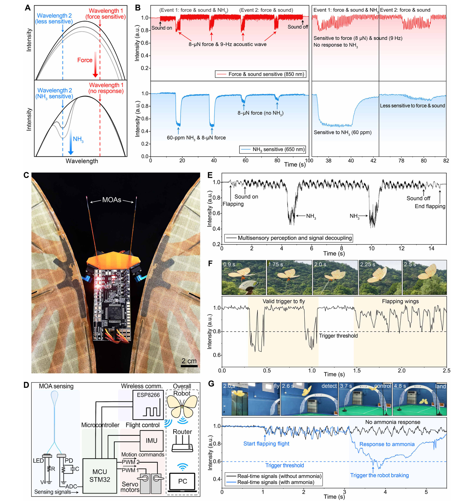

FIG. 1
把昆虫触角的“感知—传输”合进一根带薄膜的光纤
结构新意在于：微纳光纤既是柔软的受力骨架，也是传输光信号的通道；包覆薄膜既保护器件，也可承载化学指示剂。两种光损耗机制给后续多模态读出提供了物理基础。

作者把微纳光纤弯成触角，覆上一层聚合物薄膜：机械刺激改变弯曲损耗，氨气改变染料吸收，再用波长和频率差异区分信号。器件之外，他们还做了轻量光电读出和机载控制，让触角信号触发起飞与遇氨气制动降落。真正值得借鉴的是从物理编码到机器人行为的整条证据链。
阅读依据：12 页正式版全文、Methods 与 47 页补充材料中的相关实验。完整展示 5 张主图，并核对 S24、S28、S29 与 Table S2。下文将原文结果、噪声估算和本页提出的研究建议明确区分。补充材料确认演示载机总质量为 63 g；10 MHz 来自水中高频声学测试，14.1 pN 与 28 ppb 为噪声和灵敏度推算，不能直接当成机载实测极限。
它把昆虫触角的多感知功能压缩进一种可集成的光纤薄膜结构，并利用不同刺激留下的光谱与时间特征做区分；随后用实际扑翼飞行证明，传感信号能够参与行为控制。新意由器件结构、物理可分辨性和轻量系统集成共同构成。
结构新意在于：微纳光纤既是柔软的受力骨架，也是传输光信号的通道；包覆薄膜既保护器件，也可承载化学指示剂。两种光损耗机制给后续多模态读出提供了物理基础。

本图主要表征 PDMS 体系。力与风靠弯曲损耗，温度主要借助 PDMS 的热光效应。最亮眼的 14.1 pN 和 0.004 °C 都是根据灵敏度与噪声估算的分辨能力，需要与实际施加的实验刺激区分。

柔软薄膜把压力振动转成光强振荡。本文展示了压力标定、离散频率响应和真实声音；其中 10 Hz–10 MHz 跨越不同介质和实验装置，不能据此宣称扑翼机器人在空气中拥有 10 MHz 听觉。

作者把溴百里酚蓝（BTB）加入 Nafion：氨气改变局部酸碱状态，指示剂由黄变蓝，吸收谱发生变化。对机器人而言，价值在于快速气体告警；目前证据主要是氨气，而不是能识别任意气味的电子鼻。

整篇论文最有价值的系统证据在这里：先用受控混合刺激证明信息可分，再把传感、读出、处理、通信和飞控搭在机器人上，演示触发起飞和氨气触发制动降落。应把感知验证、频域解耦和实际飞行闭环分成三层。

原图来源：Tu 等，Science Advances（2025），CC BY-NC 4.0。此处裁剪完整图体并另写中文解读，未改变图中数据。可通过 PMC 开放全文 或 DOI 返回原文核对。
← 返回论文细读书架